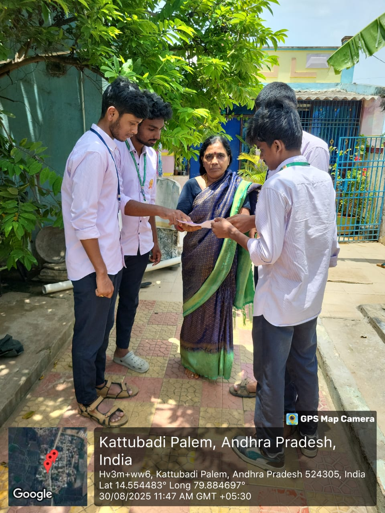
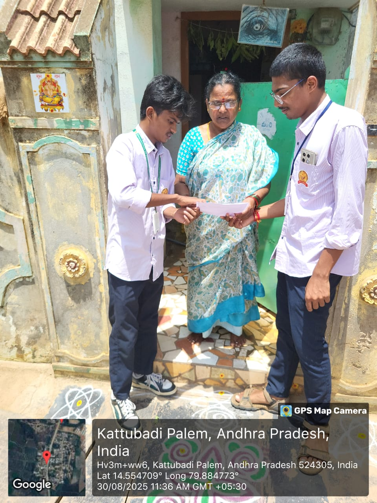

WEEKLY REPORT
WEEK – 2 (From 20-05-24 to 25-05-24)
Objective: Survey on the Range of Awareness of Internet Usage in Village
Detailed Report
Day 1:
- Met with local authorities to discuss the possibility of expanding internet coverage in the village.
- Explored options for installing additional Wi-Fi hotspots or improving existing infrastructure.
Day 2:
- Made significant progress in raising awareness about the importance of internet access in the village.
- Received commitments from local leaders to prioritize internet infrastructure development.
- Planned future activities such as fundraising events and further educational workshops to continue promoting internet usage and digital literacy in the community.
Day 3:
- Launched an awareness campaign to educate villagers about the importance of internet access.
- Distributed flyers and held informational sessions to highlight the ways the internet can improve daily life, such as accessing educational resources and connecting with loved ones.
Day 4:
- Economic Opportunities: The internet has opened up new avenues for income through online businesses and remote work.
- Different training programs were provided to the people to make them digitally active.
Day 5:
- There’s a noticeable increase in digital transactions, particularly in villages.
Day 6:
- Affordable smartphones and government initiatives on digital literacy have contributed to this growth.

